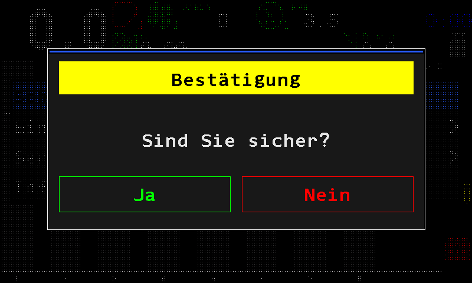

Scheiben mit Korn füllen
Die Saatscheiben eines Einzelkornsägeräts mit Dosiermotoren drehen, bis jede Scheibe Saatgut trägt, damit die Aussaat vom ersten Meter an beginnt — wie Sie es starten und das Ergebnis lesen.
Das gilt nur für Einzelkornsägeräte mit Elektromotoren der Dosierer für Saatgut im Überwachungsmodus „Einzelkorn“. Sind im Profil keine Motoren eingetragen oder ist ein anderer Modus eingestellt, wird der Menüpunkt nicht angezeigt.
Werden die Scheiben von Elektromotoren angetrieben, stehen sie leer, bis die Motoren laufen. Fahren Sie mit leeren Scheiben los, erhält jede Reihe auf den ersten Metern nichts: Jede Scheibe muss zuerst Körner aufnehmen und bis zum Abwurfpunkt tragen. Beim Füllen drehen sich die Scheiben, während die Maschine steht, damit die Aussaat vom ersten Meter an beginnt.
Halten Sie die Maschine an. Der Punkt wird nur angezeigt, solange die Maschine steht.
Drücken Sie auf dem Startbildschirm „MENU“. Wählen Sie „Scheiben mit Korn füllen“ und drücken Sie „MENU“.

Das Hauptmenü mit gewähltem Punkt „Scheiben mit Korn füllen“. Das Panel fragt „Sind Sie sicher?“. Berühren Sie „Ja“ oder drücken Sie „PLUS“. „Nein“, „MINUS“ oder „BACK“ bricht ab.

Die Bestätigung, bevor sich die Scheiben drehen. Beobachten Sie die Kacheln. Jeder Motor dreht seine Scheibe, bis der Kornsensor seiner Reihe das erste Korn registriert. Am Ende piept das Panel dreimal und zeigt „Vorgang beendet.“
Berühren Sie „Schließen“ oder drücken Sie „BACK“, um zum Startbildschirm zurückzukehren.
Um vor dem Ende abzubrechen, berühren Sie „Abbrechen“ oder drücken Sie „BACK“: Die Motoren halten sofort an, und ihre Steuerung geht zur Aussaatlogik zurück.
Den Bildschirm lesen

- Grüne Kachel. Fertig: Der Kornsensor hat ein Korn registriert, die Scheibe ist gefüllt.
- Dunkelrote Kachel. Fehlgeschlagen: Die Scheibe konnte nicht gefüllt werden. Die Motornummer ist hellrot.
- Buchstaben für den Grund. Warum die Kachel fehlgeschlagen ist — siehe die Tabelle unten. Hier m k.
- „Vorgang beendet.“ Alle Motoren sind fertig.
- „Schließen“. Kehrt zum Startbildschirm zurück. Solange der Vorgang läuft, steht auf dieser Taste „Abbrechen“.
| Kachel | Zustand |
|---|---|
| Dunkelgrau | Wartet, bis sie an der Reihe ist. Bis zu acht Motoren laufen gleichzeitig; die übrigen warten. |
| Gelb | Läuft: Die Scheibe dreht sich. |
| Grün | Fertig. |
| Dunkelrot | Fehlgeschlagen. |
Jeder Motor dreht seine Scheibe mit 4 U/min der angetriebenen Welle. Wird innerhalb von 1,25 Umdrehungen — etwa 19 Sekunden — kein Korn registriert, wird dieser Motor angehalten und als fehlgeschlagen markiert. Ein Motor, der sich bereits im Alarmzustand befindet, wird sofort als fehlgeschlagen markiert.
Buchstaben auf einer fehlgeschlagenen Kachel
Die Farbe des Buchstabens ist ebenso wichtig wie der Buchstabe: Rot bedeutet eine Störung, Weiß bedeutet aus der Überwachung genommen.
| Buchstabe | Bedeutung |
|---|---|
| m rot | Eine Störung des Elektromotors des Dosierers während des Vorgangs. |
| m weiß | Der Motor wurde aus der Überwachung genommen und kann nicht laufen. |
| k rot | Der Kornsensor hat kein Korn registriert, während sich die Scheibe drehte. |
| s rot | Eine Störung des Kornsensors während des Vorgangs. |
| s weiß | Der Kornsensor wurde aus der Überwachung genommen. |
Ist der Kornsensor aus der Überwachung genommen, kann das Panel die Scheibe nicht prüfen. Ein betriebsbereiter Motor dreht sie trotzdem etwa eineinviertel Umdrehungen, die Scheibe wird in der Praxis also gefüllt — aber das Panel meldet diesen Motor als fehlgeschlagen, weil es nie ein Korn gesehen hat.
Ihre Maschine tut etwas, das diese Seite nicht beantwortet? Schreiben Sie an support@agriwelt.com — es antwortet ein Ingenieur.